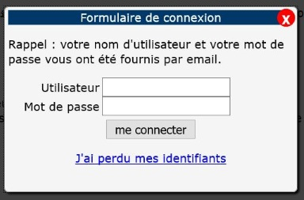

Dialog et Alert Dialog
Description

Ce composant permet d'afficher une fenêtre pour diffuser un message ou proposer une saisie à l'utilisateur, par exemple une fenêtre de connection, un message de confirmation.
Restitution
- Le composant doit posséder un nom accessible (ressource en anglais).
- Le contenu de la fenêtre doit être vocalisé automatiquement ou sur action de l'utilisateur lorsqu'il interagit avec le contenu.
Interactions de base au clavier
Les interactions au clavier sont :
- La touche Échap ferme la fenêtre.
Motif de conception : Dialog modal (WAI-ARIA Authoring Practices 1.1)
Test de dialog avec JAWS
Étape 1
Utiliser la touche Tabulation pour positionner le curseur sur le bouton de déclenchement de la boîte de dialogue.
JAWS annonce : « Bouton, Ouvrir la fenêtre d'alerte (alertdialog) ».
Étape 2
- Appuyer sur Espace ou Entrée pour activer le bouton.
JAWS annonce : « bouton ok, fermer ».
- Tabuler jusqu'à ok.
- Quitter la fenêtre à l'aide de la touche Échap.
Étape 3
- Ouvrir la seconde fenêtre de dialogue.
JAWS annonce : « bouton, ouvrir la fenêtre de dialog ».
- On peut parcourir la liste des champs de formulaire et les remplir.
- Quitter la fenêtre à l'aide de la touche Échap.
Test de dialog avec NVDA
Étape 1
Utiliser la touche tabulation pour positionner le curseur sur le bouton de déclenchement de la boîte de dialogue.
Étape 2
- Appuyer sur Espace pour activer le bouton. NVDA annonce : « confirmation dialogue ».
- Tabuler jusqu'à ok.
- Quitter la fenêtre à l'aide de la touche Échap.
Étape 3
- Ouvrir la seconde fenêtre de dialogue.
- NVDA active le mode formulaire et annonce : « formulaire de connexion dialogue, utilisateur édition ».
- On peut parcourir la liste des champs de formulaire et les remplir.
- Quitter la fenêtre à l'aide de la touche Échap.
Test de dialog avec VoiceOver
Étape 1
Utiliser la touche Tabulation pour positionner le curseur sur le bouton de déclenchement de la boîte de dialogue.
VoiceOver annonce : « Ouvrir la fenêtre d'alerte dialogue bouton. Vous êtes actuellement sur bouton,pour cliquer ce bouton, appuyez sur Ctrl + Option + Espace. »
Étape 2
- Appuyer sur VO + Espace pour activer le bouton.
VoiceOver annonce : « appuyé, ouvrir la fenêtre d'alerte. Confirmation boîte de dialogue alerte web avec 3 éléments. OK bouton, fermer. » Il s'agit du bouton OK qui a pour titre fermer.
VoiceOver positionne son curseur sur le bouton ok. Il ne lit pas le contenu de toute la boîte de dialogue. Pour en prendre connaissance, se déplacer avec les touches VO + flèches droite et gauche. VoiceOver lira « confirmation », puis « votre demande a bien été prise en compte », puis le bouton ok.
- Tabuler jusqu'à ok.
- Quitter la fenêtre à l'aide de la touche Échap.
Étape 3
- Ouvrir la seconde fenêtre de dialogue en appuyant sur VO + Espace.
- VoiceOver annonce : « ouvrir la fenêtre de dialogue, dialogue bouton. Dialogue web avec 6 éléments. Utilisateur, modifier le texte. Rappel : votre nom d'utilisateur et votre mot de passe vous ont été fournis par email. Vous êtes actuellement sur champ de texte, tapez pour saisir du texte dans ce champ. ».
Les éléments précédents, « formulaire de connexion », ne sont pas lus. Pour les lire, utiliser les touches VO + flèches droite ou gauche. Lorsqu'on se déplace vers le champ du mot de passe, VoiceOver explique qu'il ne vocalise pas les caractères tapés puisqu'il s'agit d'un champ sécurisé et comment remplir le champ.
- Quitter la fenêtre à l'aide de la touche Échap.